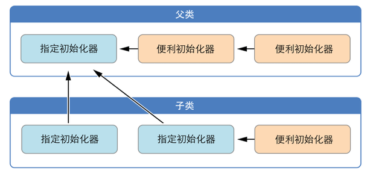

Swift初始化器有两种：指定初始化器(Designated Initializer)和便利初始化器(Convenience Initializer).
指定初始化器
指定初始化器是类的最主要的初始化器，它会将类中所有属性赋值初始化，并且一路往上调用父类的指定初始化器去初始化它们各自引入的属性。类有且至少要有一个指定初始化器。
便利初始化器
便利初始化器就是方便开发者调用的初始化器，它必须调用同个类的指定初始化器，提供一些默认的参数给指定初始化器来生成一个默认的类的实例。一个类可以没有便利初始化器。
初始化器之间的相互调用关系，必须遵守一下原则：
- 指定初始化器必须调用其父类的指定初始化器
- 便利初始化器必须调用该类中另一个初始化器
- 便利初始化器最终必须调用一个指定初始化器
简单说：就是指定初始化器必须在类的继承关系中一路向上调用，便利初始化器必须在该类中一路往指定初始化器调用。
如图：
